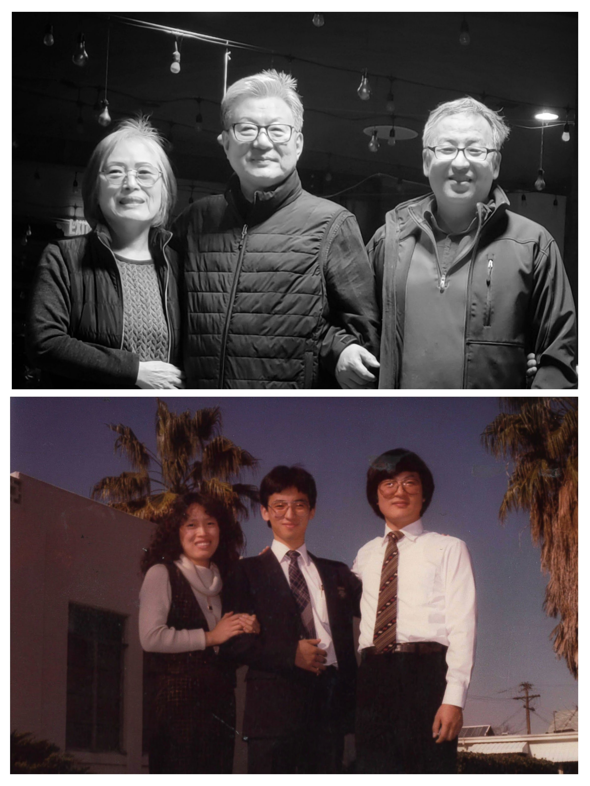

40 years ago, I was a missionary at CLAM, California Los Angeles Mission.
My home was few blocks from the corner of Western and Olympic.
It was the 3rd month, serving in the Korean Speaking program, in the K-Town.
Combination of first time away from home, new to the mission life, and the lack of language skills made it challenging and bit homesick.
My companion, Elder H. was not only more experienced as a missionary but he also spoke better Korean than me.
I was discouraged and needed a lift.
Then a newly married couple came to our chapel on Manhattan Place.
She was a member and the husband wanted to be taught by the missionaries.
After months of searching for people to teach and not making much progress on the language, this was an answer to our desire.
They lived within walking distance of the chapel and whenever we visited a feast was waiting for us.
Soon Brother C. was baptized into the Church.
He would have been baptized no matter who the missionary companions were.
He was ready to be baptized, even if the missionaries were not ready as they ought to be.
Often wondered what would have happened if I didn’t serve a mission.
Most likely would have stayed in Maryland and not come out to Utah.
Probably didn’t meet my wife at BYU and would have married someone in Washington DC area.
Missed out meeting members and missionaries in the greater Los Angeles Area.
Would have worked in a different industry and missed out going to Asia as part of Medical Device Industry expansions to Korea.
Parents would not have had the blessing of living out their days in Utah among Korean Saints.

Last Sunday Brother and Sister C. bore their testimony as they prepared to serve in Korea Pusan Mission as senior missionaries.
When Brother C. thanked me for teaching him back in 1983, shed some tears of joy and gratitude.
All I did was exercised a little faith and served 18 months in Los Angeles
Members in the Korean Ward welcomed me and accepted me as their own.
They showed kindness and instilled in me a desire to be a faithful member as a Korean person in United States.
Recall, many visits to local restaurants, Ward picnics and most of all Ward Members showed support for new converts.
I came home from LA with more understanding of the language and the gospel but also how I should live the rest of my life within the gospel
Thank you for the memories and your example, Brother and Sister C.